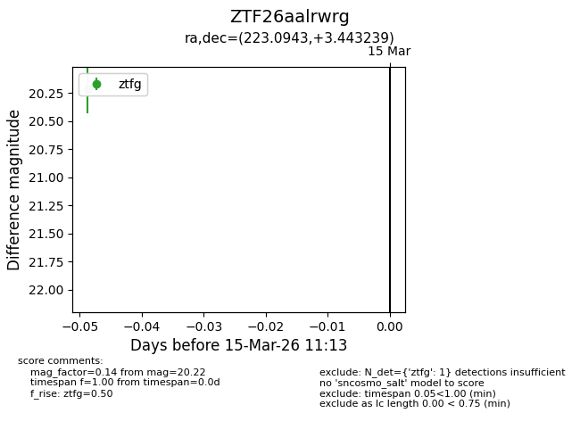
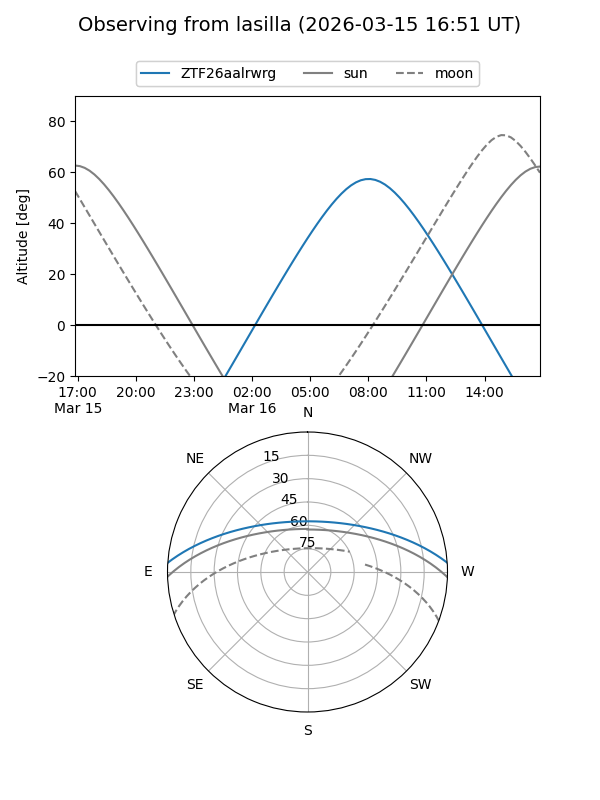
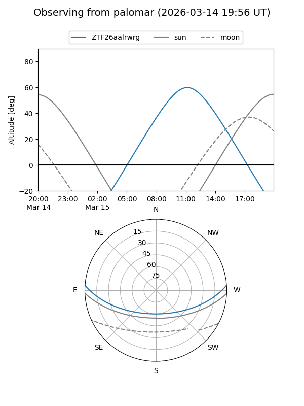
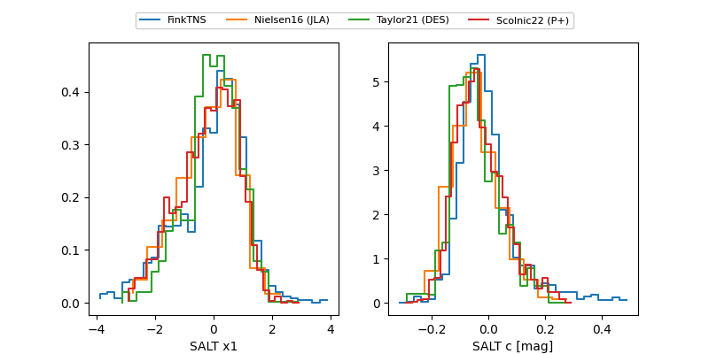

ZTF26aalrwrg
Target ZTF26aalrwrg at 2026-03-15 11:15
Aliases and brokers:
FINK: link
Lasair: link
ALeRCE: link
alt names
ZTF26aalrwrg (ztf,fink_ztf)
Coordinates:
equatorial (ra, dec) = 223.0943,+3.44324
equatorial (HMS+DMS) = 14:52:22.62,+03:26:35.66
galactic (l, b) = (358.8724,+52.64776)
Flags:
Photometry:
last ztfg=20.22
1 ztfg detections
Lightcurve

Visibility


Additional plots
